Lightning AI Studio
We choose Lightning AI Studios for our toolbox because it provides a persistent, cloud-based environment that is always ready to use—like having a laptop in the cloud. This allows us to include data, pretrained weights, and files directly in the Studio, ensuring everything is available without extra setup. Users can access it through a browser after registration, with default GPUs preconfigured by the developers for seamless use. The platform supports collaboration by enabling easy sharing of files and weights. With free compute credits, a pay-as-you-go model, and no installation required, Lightning AI Studios offers a user-friendly, efficient, and scalable solution for AI development.
1. Registration
In order to use the provided toolbox within Lighting AI Studios, a registration is required. Please setup an user account by following this link. For further assistance during registration, please click the "Show More" button below.
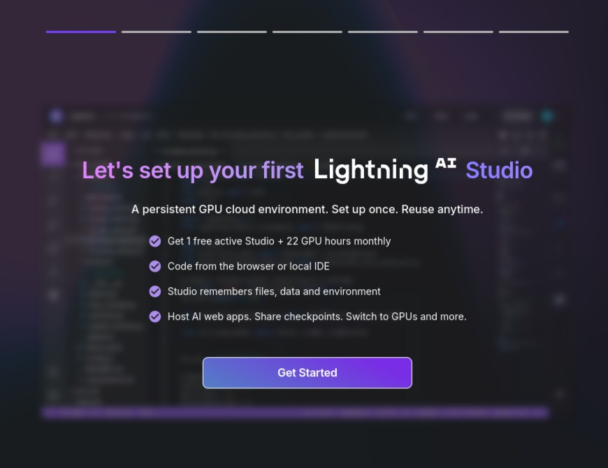
Once you have registered, you will be prompted to the "Get Started" Dialogues. In the following you can basically leave everything with default settings. This will setup the studio in a sufficient way.
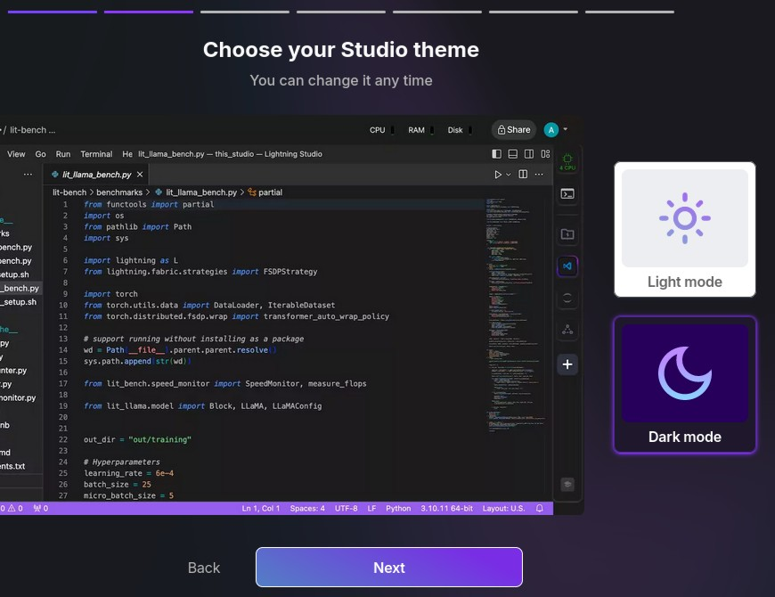
First you are asked to choose "Light Mode" or "Dark Mode" of your studio. You can follow your preferences.
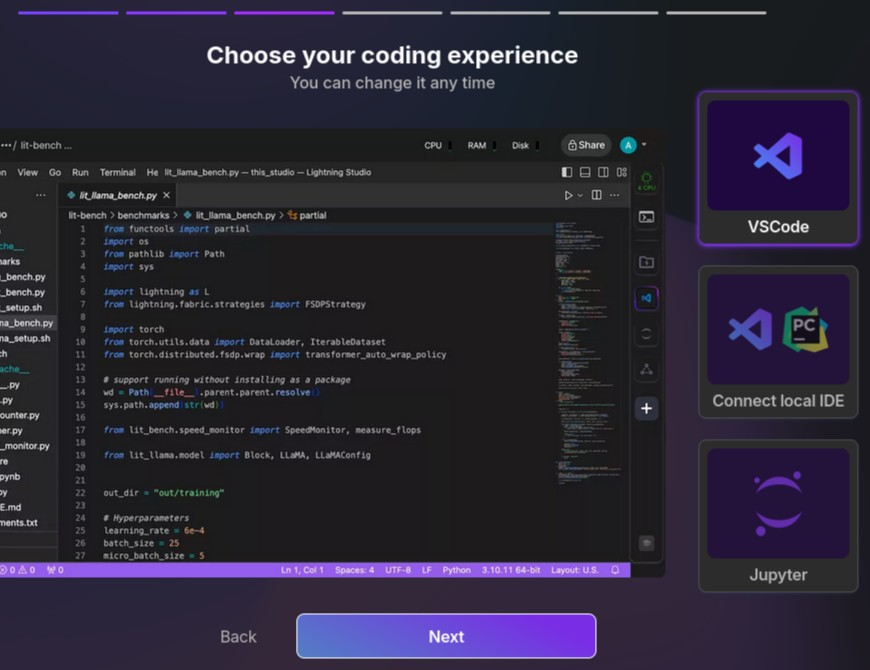
Next, you can choose a "coding experience", which refers to the design of your studio. You can choose from different IDEs. Leaving this with the default of "VSCode" will lead to a similar looking studio as the one introduced further below.
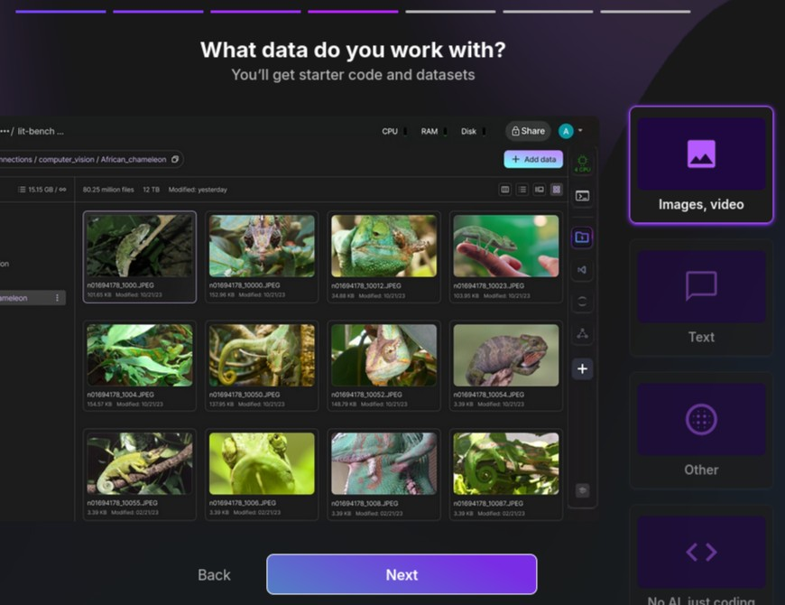
Lightning AI Studio asks us to choose the data we are working with. This is mainly relevant if you would wish to develop own code within the studio, as this adapts starting code and tutorials. As we are working with EM images, we will set it to "images, video".
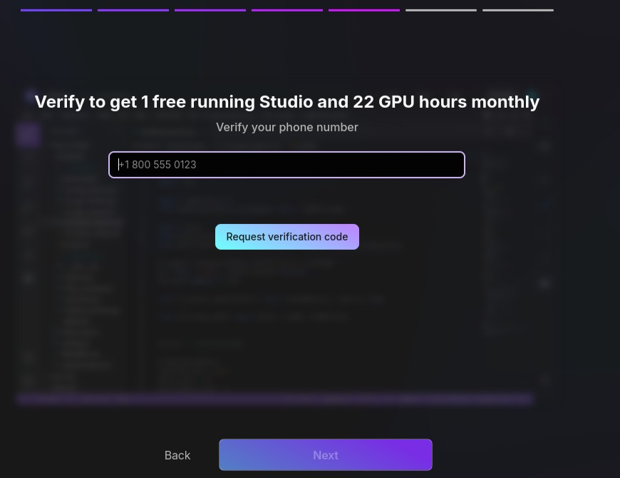
Lighting AI Studion will ask you to verify your phone number in order to get the free plan.
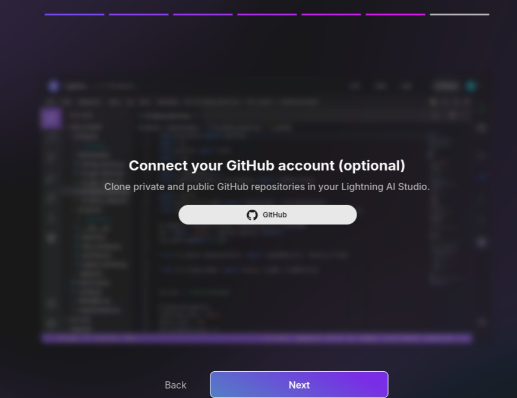
In an optional step, you can setup your own github with this studio. Again, this is mainly of relevance when you wish to develop own code. We hence skip this step by clicking "Next".
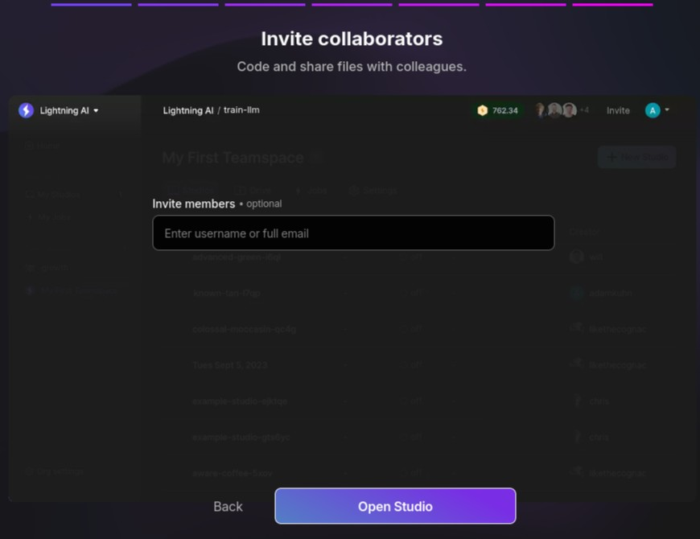
Again, in an optional step you can invite collaborators and collegues. We will skip this step for now and click "Open Studio".
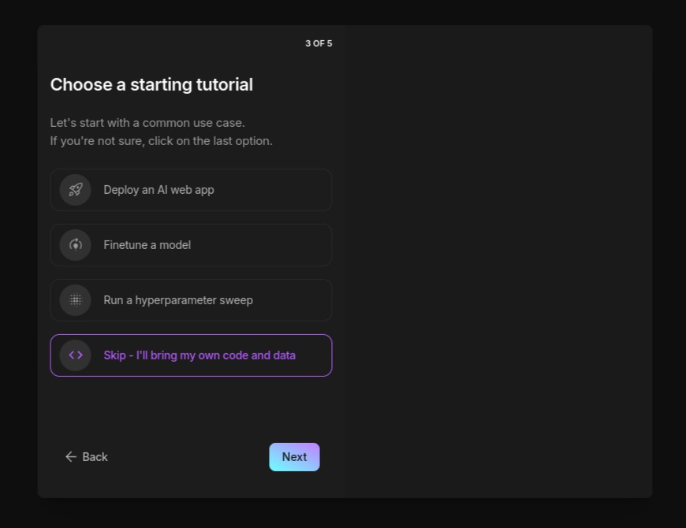
Finally, you are asked to choose a starting tutorial. This is again only of relevance when you wish to develop own code. Hence, we choose "Skip - I'll bring my own code and data".
With this you are done with the registration. You can close the browser now.
2. Pricing
Lighting AI Studios offers three plans: one free plan and two paid plans. For details on the plans please follow this link
By completing the registration steps outlined above, you'll gain access to Lightning AI Studio's free plan, which includes 15 compute credits per month. This plan allows the use of a free, CPU-based Studio for up to 4 hours at a time, with the option to restart it after each session to continue using it at no cost. For deep learning tasks, we recommend GPU-based Studios, which require compute credits. The number of credits consumed depends on the type of GPU selected. All use cases in our toolbox are pre-configured with a default GPU setup optimized for computation, ensuring smooth and efficient performance. Additional credits can be added as needed using the pay-as-you-go model.
3. Use
For getting started with one of the use cases go to our Use Case Subpage and scroll down to the use cases. Here the uses cases are structured into the introduced tasks of Image to Value(s), Image to Image and 2D to 3D.
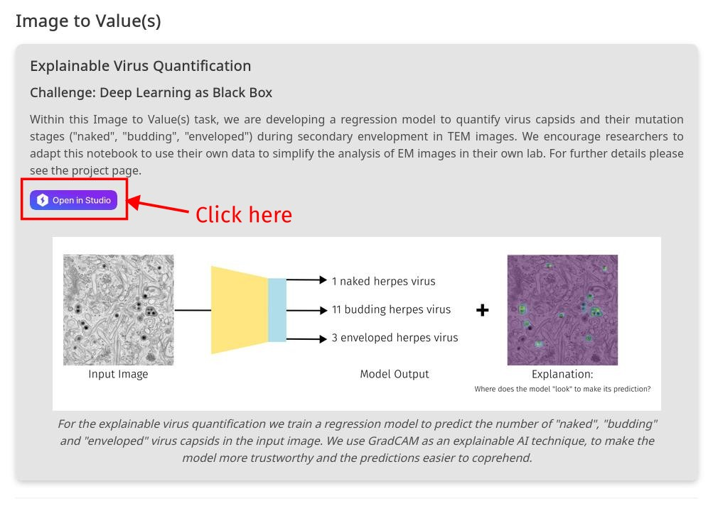
Click on the purple "Open in Studio" button to get to the Use Cases project page. This will open up Lightning Studio in a new tab.
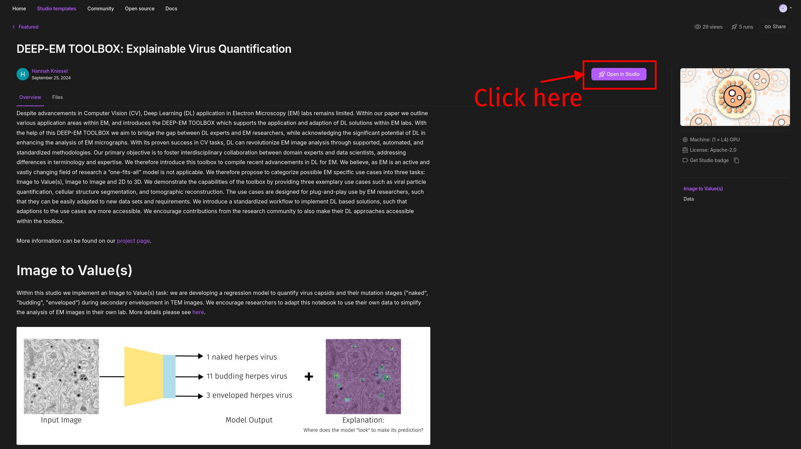
You can now scan over the project page to get familiar with the basic idea of the use case. Once you are familiar, again click on the purple "Open in Studio" button. This will now open the code base.Hint:Lightning Studio is recommending to use the Google Chrome browser for optimal support.
The code base will be duplicated into your own Lightning teamspace such that you are not directly working on the published code base. This allows you to make changes without interferring with the published use case.
Thanks to Lightning studio there is no additional setup required. The studio is published in such way that it contains at least one example dataset for training your first model. Further, the studio environment will have all dependencies installed, allowing you to get started right away.
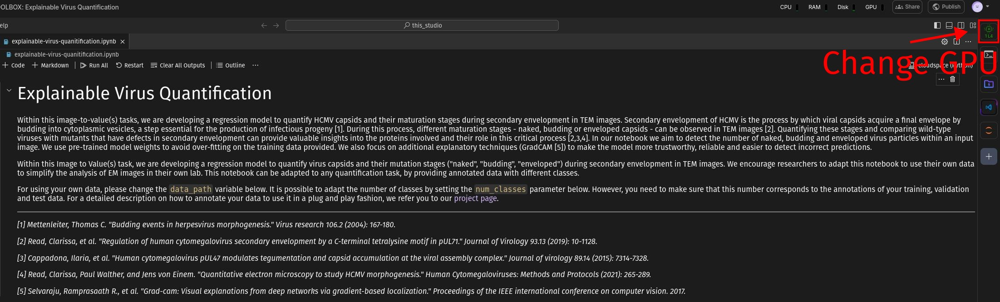
In case you wish to change the GPU type you can do so on the top right corner as shown above. For a more detailed documentation please see here.
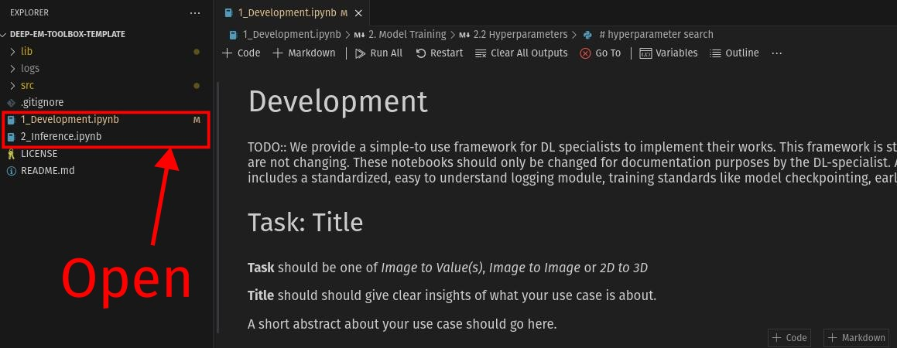
We structure the code based on the introduced workflow. This means that each use case is published with one 1_Development.ipynb and one 2_Inference.ipynb. For training your model open the 1_Development.ipynb. This will open a jupyter notebook, which might remind you of Google Colab. Jupyter notebooks are able to combine text as well as code cells. You will need to follow the notebook from top to bottom and execute each cell. Each step will be defined in detail within the notebook, if it requires your additional input.
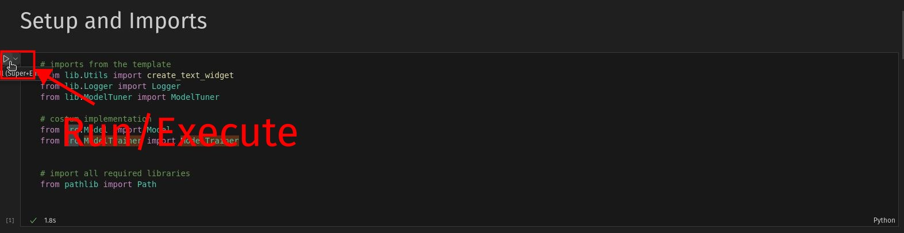
To execute a cell (also called "run" a cell) you can hover the curser on the top left of the cell. An arrow (▷) will appear. Click on that arrow.
Otherwise you can use a keyboard shortcut. First you will need to click inside the cell to select it.
By pressing Ctrl+Enter, the cell will be executed. If you press
Shift+Enter, the currently selected cell will be executed and the next cell will
be selected.
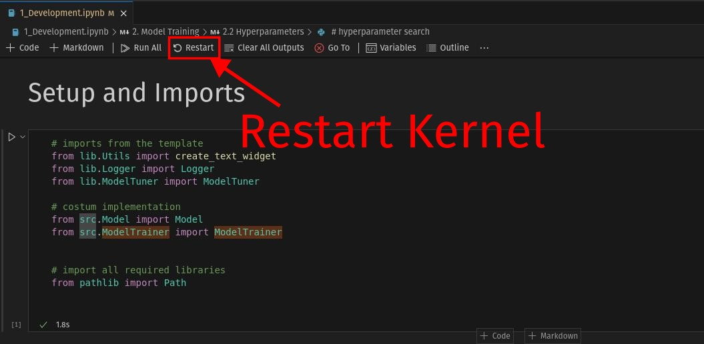
If you wish to train multiple models, or if something goes wrong in the meantime, we recommend to start fresh. To do so, restart the kernel as shown above and then again follow the notebook from top to bottom executing each cell.
Once you are finished with training your model you can go on to the 2_Inference.ipynb. This notebook should be used for the application of the model on new, unseen data - finally supporting the analysis of EM data.
For further reading and a quick overview of how to use jupyter notebooks we recommend this tutorial. It is based on Google Colab, but it follows the same concepts, as our toolbox (similar to Google Colab) is based on jupyter notebooks. Please skip the first sections and go directly to "Getting Started".
4. Upload Data
In order to train you model on your labs specific data, you will need to upload it and structure it as described within the notebook. To upload your data please follow the steps below. A more detailed instruction can also be found here.
Upload your own data
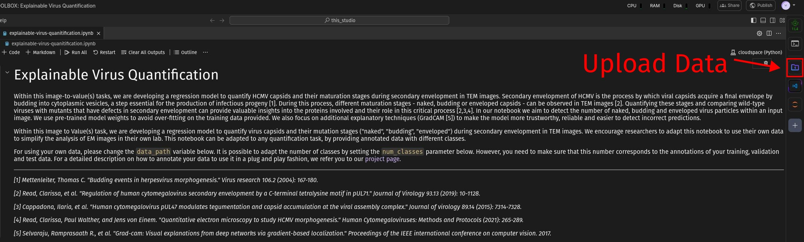
To upload your own data for training, click on the icon as shown above on the right of the screen.
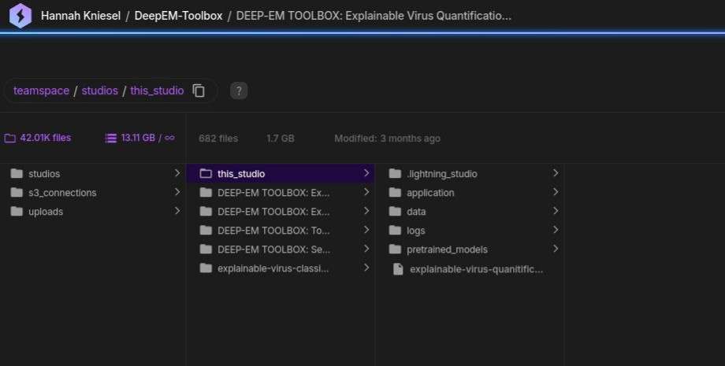
Here you should select studios > this studio and finally navigate to where the
data should be placed.
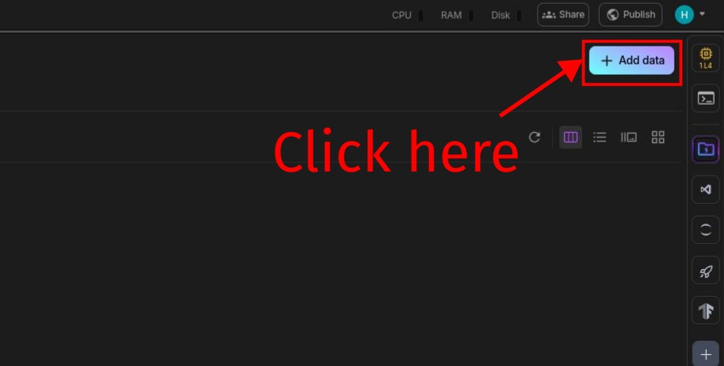
Once you navigated to the correct position (or somewhere inside the studio, as this can also be changed later), click on the "Add data" button in the top right corner as shown above.
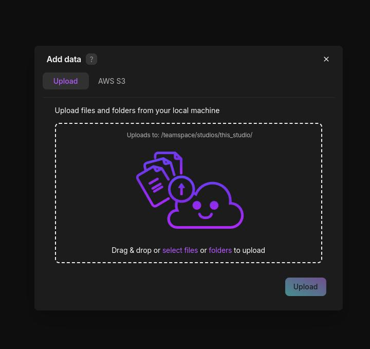
You can now drag and drop the data for uploading. The upload of the data can take a while, depending on the size of your dataset.
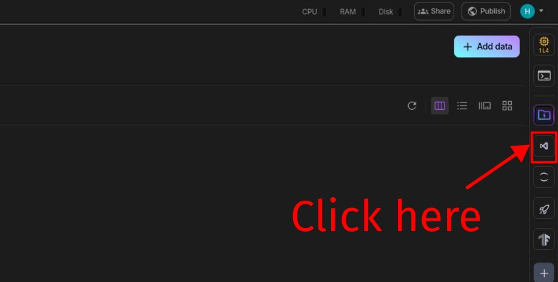
To go back to the codebase (which is referred to as "Studio" in the Lightning AI termonology) of the use case, click on the icon on the right as shown above.
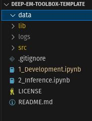
Once the data upload has finished,
you will be able to see the data within the Studio of the use case inside the
menue on the left side, as shown above. If the data is not yet placed at the correct position, you can
right-click it for
copy/cut/paste operations, or use the standard keyboard shortcuts like Crtl+X,
Crtl+V.
Key Points
When using Lightning AI’s services, here are the important aspects related to your data:
- Data Ownership: You retain ownership of your data and models (referred to as "Customer Models"). Lightning AI does not own them.
- Access to Your Models: Lightning AI has administrative access to your models only for operational purposes (like support or troubleshooting), not for unauthorized use.
- Performance Data: Lightning AI can use performance data (e.g., how well your models perform) for any purpose, but not your original models.
- Security Measures: Lightning AI commits to using commercial-grade security measures to protect your data. If there's a breach, they will notify you promptly.
What Does This Mean for Your Sensitive Data?
While Lightning AI ensures they won't access your models for unauthorized purposes, they will have access to them for providing the services you requested, such as technical support. They are required to protect your data with appropriate security measures and notify you if there’s a breach.
Important: If you upload sensitive data, it’s recommended to understand their security protocols. You are also responsible for ensuring you have the legal rights to the data you upload.
Ultimately, if you are concerned about privacy, review their security policies and ensure your data handling complies with relevant regulations. You can find further details here and here.
5. Collaboration
At some point within the process you probably wish to share the work with fellow collegues. This could be for working together on improving the model training, or by allowing your collegues access to a model which you've trained. This can be achieved easily using teamspaces of the Lightning AI studio. For an introduction into what a teamspace is, please see here. For further details on how to enable sharing see below.
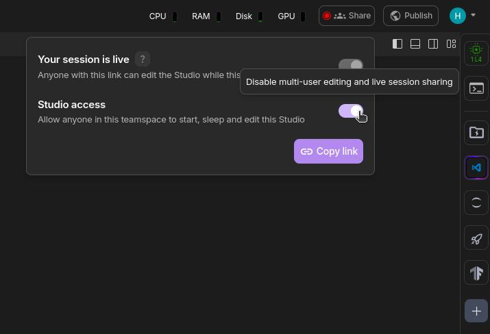
For sharing the Studio of your current use case, you will first need to enable the sharing of this
Studio. This can be done by clicking in the top right on the Share button, and enable the
Studio Access.
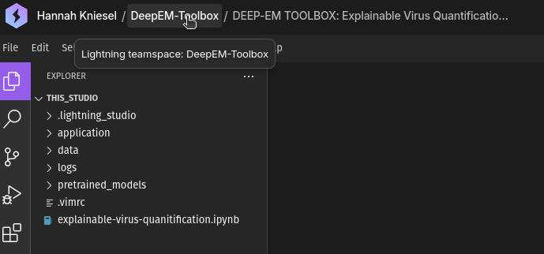
Next go to your teamspace. This can be done by clicking on the teamspace name in the top left corner.
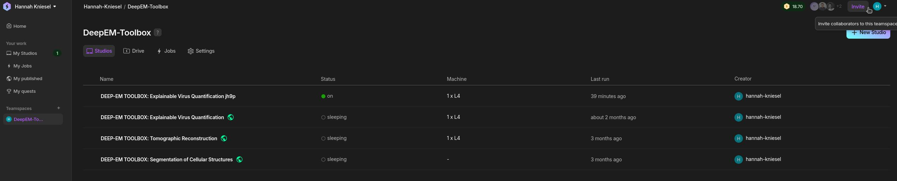
Within your teamspace go to the top right corner and click Invite >
Invite Member. Note that the invited members are required to register with Lighting in order
to use the Studio.